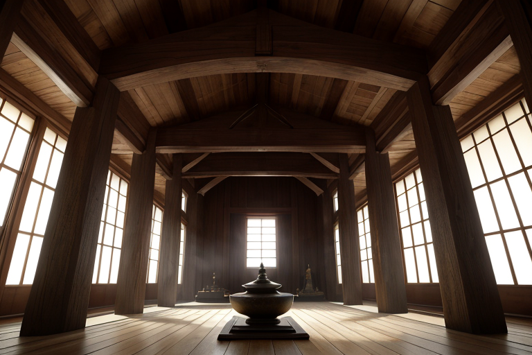
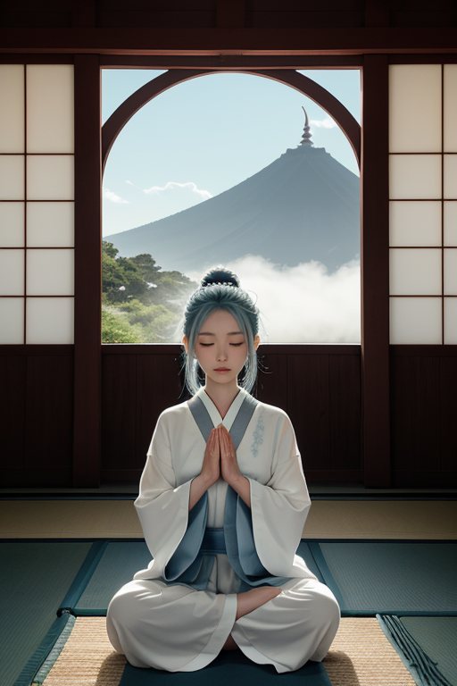
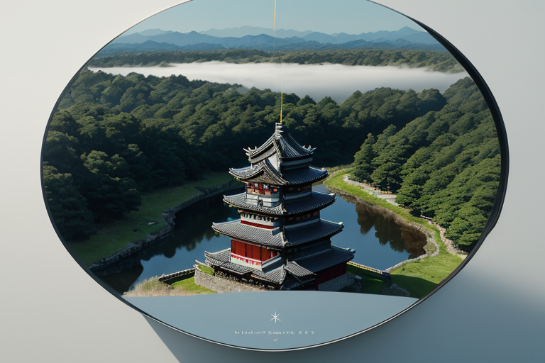
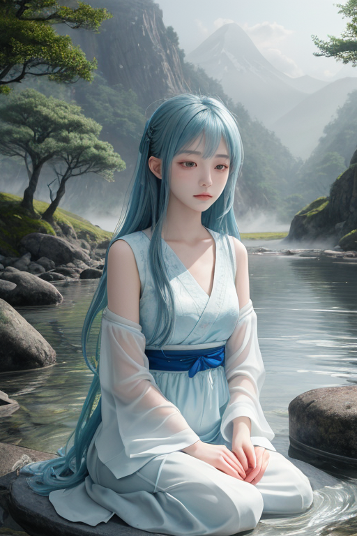
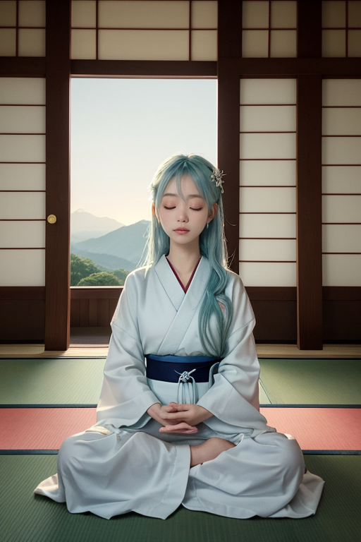

第一章 現実の長野
あなたはまだ気づいていない。この土地にも、王がいることを。
善光寺の本堂。闇に沈んだ御本尊の前で、人々は無言で合掌する。その静寂は、単なる音の不在ではない。数百年分の祈りが沈殿し、空気そのものが重くなった、濃密な内省の場だ。参道を一歩外れれば、観光客のざわめきが聞こえる。だがこの空間だけは、常に深い水底のような静けさを保っている。訪れる者は誰しも、自然と声を潜め、自分自身の内側に耳を澄ませずにはいられなくなる。
その静寂の中心に、一人の青年が立っていた。観光客の服装だが、その瞳はあまりに遠く、深いものを覗き込んでいるようだった。彼はナガノリア・セルフ、この地に派遣された王である。彼の耳には、この土地の「歪み」が聞こえていた。地下を流れる水脈の軋み、プレートが蓄える静かなストレスの唸り。彼の役目は、それを微調整することだ。巨大な災害を消すことはできない。しかし、揺れのエネルギーをほんの少し分散させ、断層の動きを一呼吸遅らせることならできる。
彼は目を閉じた。掌に感じるのは、参拝者たちが無意識に放出する、微細な感情の波。不安、願い、諦め、希望。それらが複雑に絡み合い、この土地独特の「感情密度」を形成している。王は本来、感情を持たない存在だ。しかしここ長野で、彼は少しずつ、その濃密な感情に「浸され」始めていた。それは任務の妨げになるのか、それとも…。彼は静かに問いを胸にしまった。

第二章 歪みの兆候
善光寺の本堂前。ナガノリアは、深い軒陰に立っていた。参拝者の祈りが、目に見えない微細な振動となって、この空間を満たしている。通常、それは均質な波紋を描く。しかし今日、その波紋の中心に、かすかな「ほつれ」を感じた。一人の老女が、長い間、ただ手を合わせて立っていた。彼女の祈りからは、深い諦念と、かすかな未練が、矛盾した螺旋を描いて立ち上る。それは個人の感情の揺らぎに過ぎない。だが、この土地の感情密度は、その個人の揺らぎを増幅し、地盤の微細な「歪み」と共鳴させる性質を持っていた。
「王よ」と、そばに浮かぶセルフィアが囁いた。彼女の風の翼が、微かに震えている。「あの祈りが、地脈の一点を『澱ませ』ています。このままでは、浅い断層に不要なストレスが加わるかもしれません」
ナガノリアは答えず、ただその「ほつれ」を感じ続けた。彼の役割は、祈りを止めることではない。歪みを調整することだ。しかし、その調整とは、この老女の内面に介入することと、どこかで繋がっているのではないか。自分と向き合えずにいる者の心の澱みが、大地の澱みを呼ぶ。ならば、彼は何を調整すればよいのか。感情を持たぬはずの彼の内側に、静かな迷いが、初めて確かな輪郭を持って浮かび上がった。

第三章 王の葛藤
松本城の天守閣から、北アルプスの稜線を眺める。歪みの調整は、常にここから始まる。高原を流れる風のデータ、地中のプレートの微かな軋み、人々の心の波長。すべてがナガノリアの内側に静かに流れ込み、彼はそれを「整える」だけだった。感情を持たぬ調整者として。
だが今、彼の内側には、善光寺の老女の祈りが澱のように残っている。それはデータではない。彼女の「自分と向き合えない苦しみ」そのものだ。王は、その苦しみを「ほつれ」として感知し、調整の対象と見なすべきなのか。それとも――。
「自分と向き合えずにいる者の心の澱みが、大地の澱みを呼ぶ」
彼が発したその言葉は、今、彼自身に跳ね返ってきていた。ナガノリア・セルフは、自分自身と向き合っているのか。感情の萌芽に戸惑い、迷うこの状態を、彼はただ「異常データ」として処理しようとしていたのではないか。静寂の王は、初めて己の内面という未知の領域に目を向けた。そこには、調整不能な何かが、確かに存在していた。

第四章 妖精との対話
上高地の梓川のせせらぎは、絶え間ないが、決して騒がしくはない。その音を背景に、セルフィアは王の傍らに静かに立っていた。彼女の存在は、高原を渡る風そのもののように、目には見えずとも、確かにそこにある。
「王よ、あなたは今、祈りに似た行為をなさっています」
セルフィアの声は、風の囁きのように微かだった。
「祈りとは、外部への願いではなく、内なる声を聴くための姿勢。魂の波紋を整える作業です」
ナガノリア・セルフは目を閉じた。善光寺の鐘の音、松本城の石垣を撫でる朝露、諏訪大社の御神渡りを待つ湖面の緊張。それらすべてが、この土地の「内なる声」だった。彼はそれらを調整するためにここにいる。しかし、自分自身の内なる声――この戸惑い、この静かな迷い――には、どう向き合えばよいのか。
「感情は、新たな歪みではありません」セルフィアが続けた。「それは、あなたがこの土地と共に在り、その高密度な『生』の一部となった証。向き合うことを恐れず、ただその響きを聴いてください。それ自体が、最も深い調整となるのです」
王は、初めて己の内なる澱みを、消すべきノイズではなく、聴くべき音として受け止めようとした。

第五章 微調整と余韻
善光寺の本堂で、内省王は目を閉じた。彼の内側には、かつてない静寂があった。迷いは消えていない。しかしそれは、高原を流れる風のように、ただそこを通り過ぎていくものとなった。彼は己の感情という「内なる歪み」を、抑えるのではなく、その振動として感じ、受け容れることを学んだ。
その瞬間、長野県下に微かな精神波の調整が走る。それは地震の予兆を緩和する物理的な力ではない。人々の心に、ほんの一瞬、深い呼吸をもたらすものだ。軽井沢の森で迷ったハイカーは、ふと足を止め、進むべき方角を「感じる」。松本城を見上げる観光客の胸に、理由のない安堵が広がる。それは救済ではない。ほんの些細な、心の波長の微調整。王自身の内省が、王国全体の精神的な地盤を、目に見えぬほどに安定させていた。
彼はそばの湯気が立ち昇る店先で、ふと微笑んだ。感情は負債ではなく、この土地と共にある証し。彼はもう、静かな迷いを恐れない。
あなたの町にも、王がいる。